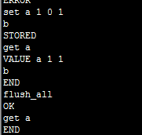

1 简介
Memcached是高速内存缓存服务，主要用来进行数据缓存。在IPP中，我们有很多数据非常适合缓存的，这些数据通常很大，访问非常频繁，而且基本上变化很少。在IPP的设计中，Memcached是作为一个加速组件使用的，如果有Memcached,从缓存中读取，如果没有Memcached所有的数据通过数据库读取。Memcached在IPP系统运行中是可以独立管理的，可以启动和停止。
2 Memcached协议
Memcached是典型的client –server设计方式，client和server基于tcp或者udp通讯，提供了文本协议和二进制协议，Memcached的默认端口是11211。
Memcached文本协议
1. memcache1.1指令格式：
<command name> <key> <flags> <exptime> <bytes>/r/n < data block>/r/n
2. memcache1.2指令格式：
<command name> <key> <flags> <exptime> <bytes> [noreply]/r/n < data block>/r/n
3. 各个标志的含义
<key> - 键值
保存在服务器上的数据的唯一标识符，必须是跟其他的key不冲突，否则会覆盖掉原来的数据，这个key是为了能够准确的存取一个数据项目
<flags> - 标志位 标志位是一个16位的无符号整形数据(memcached1.2升级到32位)，客户端可以把它用作位域来存储数据的特殊信息，服务器不处理标志位，当客户端提取数据的时候，返回给客户端
<exptime> - 有效期限
是数据在服务器上的有效期限，如果是0，则数据永远有效，单位是秒，Memcache服务器端会把一个数据的有效期设置为当前Unix时间+设置的有效时间
<bytes> - 数据长度
block data块数据的长度，一般在这个长度结束的下一行跟着block data数据内容，发送完数据以后，客户端一般等待服务器端的返回，服务器端的返回：数据保存成功
3 Memcached安装和使用
3.1 在Windows环境安装使用
Memcached基于源代码发布，没有提供windows的版本，但是可以通过cygwin自行编译，也可以使用第三方发布的版本，如NorthScale Memcached Server。
1. 启动命令
memcached.exe -d start
2. 查看是否启动
Netstat –ano | findstr “11211”
3. 关闭
Memcahed -d stop
4. 作为服务安装
如果每次都需要启动非常麻烦，可以把memcached作为服务允许
Memcached -d install
5. 作为服务卸载
Memcached -d uninstall
3.1.1 重要参数设置
-p <num> 监听的端口
-l <ip_addr> 连接的IP地址, 默认是本机
-m <num> 最大内存使用，单位MB。默认64MB
-M 内存耗尽时返回错误，而不是删除项
-c <num> 最大同时连接数，默认是1024
-f <factor> 块大小增长因子，默认是1.25
-n <bytes> 最小分配空间，key+value+flags默认是48
其他参数通过memched帮助查看 Memcached –h
3.2 在Linux环境安装使用
3.2.1 安装
3.2.1.1 基于包管理器的安装
1. Readhat/Centos下安装
yum install memcached
2. Ubuntu & Debian下安装
apt-get install memcached
3.2.1.2 基于源代码方式
1. 下载源代码
Memcached的源代码可以通过http://code.google.com/p/memcached/downloads/list
或者通过http://memcached.org/latest获取最新版本
2. 解压
tar -zxvf memcached-1.x.x.tar.gz
cd memcached-1.x.x
./configure --prefix=/usr/local/memcached
注意memcached依赖网络包libevent，需要提前安装
make && make test
sudo make install
3.2.2 运行管理
1. 启动
memcached -d -m 1024 -u root -l 192.168.141.64 -p 11211 -c 1024 -P /tmp/memcached.pid
-d选项是启动一个守护进程
-m是分配给Memcache使用的内存数量，单位是MB
-u是运行Memcache的用户
-l是监听的服务器IP地址，如果有多个地址的话。
-p是设置Memcache监听的端口，
-c选项是最大运行的并发连接数，默认是1024
-P是设置保存Memcache的pid文件，这里是保存在 /tmp/memcached.pid
2. 基于服务管理
service memcached start| stop| restart
4 Memcached客户端
4.1 Telnet方式
Memcached基于tcp或者udp，协议可以使用文本方式。所以可以通过telnet工具发送文本来模拟。
1. 设置参数
2. 登录

4.2 基于Memcached Client访问
有很多第三方库对Memcached的访问协议进行了封装，基本上主流语言都有对应的库可以使用。IPP使用了Memcached Client。
具体参考工程FrameworkCache, 提供了{MemcachedServerList}在编译中指定服务器列表
格式IP:port;ip2:port2
5 Memcached分布式
Memcached没有集群的概念，每个memcached都是独立的。为了提高扩展和高可用，通常通过客户端进行操作来达到效果。
IPP通过{MemcachedServerList}在编译中指定服务器列表，格式IP:port;ip2:port2。
5.1 可扩展性
对于数据集群，在存储数据的时候应该尽可能地把数据离散存储。 一般通过hash算法，来选择数据对应的存储位置。
Memcached Client提供了四种hash算法， native、基于md5的散列、基于crc32的hash、还有一致性hash。其中native的算法最快，也是默认的的方式。
Crc32散列比较均匀，一致性hash主要为了保证数据动态扩展。
IPP在实际使用中使用native算法
5.2 可靠性
可靠行通常通过数据复制来实现。在IPP中，通过两种策略保证可用性。
1. 启用failover机制，如果服务列表中的一台发生故障，会选择下一个可用的服务进行数据存储。 理论上为了保证数据的一致性，故障服务器中的数据应该恢复后不可用，实际上我们对这个容忍了。
2. 系统不强依赖memcache，当memcache发生故障时会到数据库中获取，从而保证可用性。
6 基于FrameworkCache的缓存开发示例
一般业务流程：通过service访问缓存处理类，缓存处理类访问缓存，如果没有缓存则从数据访问层加载数据，然后放在缓存中，返回给服务；如果缓存中有数据则直接返回。
6.1 定义数据访问层
IPP通过Ibatis框架做数据
6.1.1 定义数据库表
6.1.2 定义持久化模型
DaoGateway\model\src\main\java\com\allinpay\api\model\gateway\OrgTransRouter.java
6.1.3 定义orm映射文件
DaoGateway\resource\spring\gateway\OrgTransRouter.xml
6.1.4 定义数据库访问层接口
DaoGateway\dao\src\main\java\com\allinpay\api\dao\gateway\IOrgTransRouterDao.java
6.1.5 实现数据库访问接口
DaoGateway\dao\src\main\java\com\allinpay\api\dao\gateway\impl\OrgTransRouterDao.java
6.1.6 注册orm映射文件
DaoGateway\resource\spring\gateway-SqlMapConfig.xml
1. 注册dao,
DaoGateway\resource\spring\gateway-dao.xml
6.1.7 说明
这个可以通过自动化生成工具生成
1. 包路径工程进行配置
CodeGenerator\core\src\main\java\com\allinpay\generator\ibatis\CodeGeneratorFactory.java
2. 添加要生成的表
factory.addFilterTables("GW_TRANSACTION_ROUTER".toLowerCase());
3. 运行
CodeGeneratorFactory.java
6.2 定义缓存加载处理类
6.2.1 定义缓存处理类接口
CommonPaymentGateway\src\main\java\com\allinpay\cpg\cache\IOrgTransRouterCacheHandler.java
6.2.2 实现缓存处理类
PaymentGateway\src\main\java\com\allinpay\pg\service\cache\OrgTransRouterCacheHandler.java
需要实现ICacheDataHandler定义的接口
注意：
1. 定义数据key的方式
CacheKeyPrefix = "ORG_TX_ROUTER_";
2. 加载数据的方式
3. 启动的时候是否加载
initLoadDataIntoCache
6.2.3 注册缓存处理类
PaymentGateway\src\main\resource\spring\PaymentGateway-cache.xml
注意引用的数据访问层
6.2.4 注册到Cache管理类中
6.3 服务引用
6.4 单元测试
流程比较多，需要的配置也比较多。通过单元测试可以更加容易测试程序的正确性
在paygateway中新增测试类OrgTransRouterCacheHandlerTest
@Test
public void testGetData() {
// 注意要编译发布daogateway
String[] configLocations = new String[] { "/spring/test-dao.xml",
"/spring/gateway-dao.xml", "/spring/FrameworkCache-context.xml" };
ApplicationContext applicationContext = new ClassPathXmlApplicationContext(
configLocations);
IOrgTransRouterDao dao = (IOrgTransRouterDao) applicationContext
.getBean("OrgTransRouterDao");
Assert.notNull(dao);
CacheDataHandlerFactory factory= (CacheDataHandlerFactory) applicationContext
.getBean("CacheDataHandlerFactory");
Assert.notNull(factory);
IOrgTransRouterCacheHandler cacheHandler = new OrgTransRouterCacheHandler(dao);
factory.addDataHandler(cacheHandler);
List<IModel> list = (List<IModel>) cacheHandler.getData();
Assert.notEmpty(list);
}
7 常见错误

8 常用命令
3. 存储数据一条数据key=k value=ipp的数据
ipp字节为3
不能重复add
8.1 查看状态
stats
这里显示了很多状态信息，下边详细解释每个状态项：
1. pid: memcached服务进程的进程ID
2. uptime: memcached服务从启动到当前所经过的时间，单位是秒。
3. time: memcached服务器所在主机当前系统的时间，单位是秒。
4. version: memcached组件的版本。这里是我当前使用的1.2.6。
5. pointer_size：服务器所在主机操作系统的指针大小，一般为32或64.
6. curr_items：表示当前缓存中存放的所有缓存对象的数量。不包括目前已经从缓存中删除的对象。
7. total_items：表示从memcached服务启动到当前时间，系统存储过的所有对象的数量，包括目前已经从缓存中删除的对象。
8. bytes：表示系统存储缓存对象所使用的存储空间，单位为字节。
9. curr_connections：表示当前系统打开的连接数。
10. total_connections：表示从memcached服务启动到当前时间，系统打开过的连接的总数。
11. connection_structures：表示从memcached服务启动到当前时间，被服务器分配的连接结构的数量，这个解释是协议文档给的，具体什么 意思，我目前还没搞明白。
12. cmd_get：累积获取数据的数量，这里是3，因为我测试过3次，第一次因为没有序列化对象，所以获取数据失败，是null，后边有2次是我用不同对象测试了2次。
13. cmd_set：累积保存数据的树立数量，这里是2.虽然我存储了3次，但是第一次因为没有序列化，所以没有保存到缓存，也就没有记录。
14. get_hits：表示获取数据成功的次数。
15. get_misses：表示获取数据失败的次数。
16. evictions：为了给新的数据项目释放空间，从缓存移除的缓存对象的数目。比如超过缓存大小时根据LRU算法移除的对象，以及过期的对象。
17. bytes_read：memcached服务器从网络读取的总的字节数。
18. bytes_written：memcached服务器发送到网络的总的字节数。
19. limit_maxbytes：memcached服务缓存允许使用的最大字节数。这里为67108864字节，也就是是64M.与我们启动memcached服务设置的大小一致。
20. threads：被请求的工作线程的总数量。
pid | memcache服务器的进程ID |
uptime | 服务器已经运行的秒数 |
time | 服务器当前的unix时间戳 |
version | memcache版本 |
pointer_size | 当前操作系统的指针大小（32位系统一般是32bit） |
rusage_user | 进程的累计用户时间 |
rusage_system | 进程的累计系统时间 |
curr_items | 服务器当前存储的items数量 |
total_items | 从服务器启动以后存储的items总数量 |
bytes | 当前服务器存储items占用的字节数 |
curr_connections | 当前打开着的连接数 |
total_connections | 从服务器启动以后曾经打开过的连接数 |
connection_structures | 服务器分配的连接构造数 |
cmd_get | get命令（获取）总请求次数 |
cmd_set | set命令（保存）总请求次数 |
get_hits | 总命中次数 |
get_misses | 总未命中次数 |
evictions | 为获取空闲内存而删除的items数（分配给memcache的空间用满后需要删除旧的items来得到空间分配给新的items） |
bytes_read | 总读取字节数（请求字节数） |
bytes_written | 总发送字节数（结果字节数） |
limit_maxbytes | 分配给memcache的内存大小（字节） |
threads | 当前线程数 |
8.2 清空所有缓存

8.3 添加
8.4 最大时间
过期时间不能大于30天，计时单位是秒。
9 参考资料
http://jameswxx.iteye.com/blog/1168711 memcached client源码分析 http://github.com/memcached/memcached/blob/master/doc/protocol.txt 官方文本协议
http://code.google.com/p/memcached/wiki/BinaryProtocolRevamped 官方二进制协议
http://blog.csdn.net/kenbinzhang/article/details/4703769 memcached文本协议